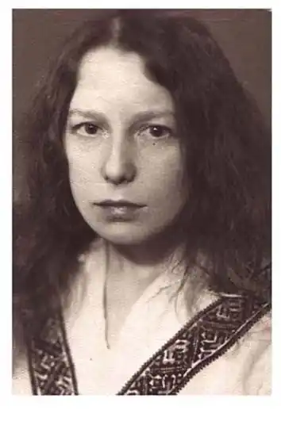
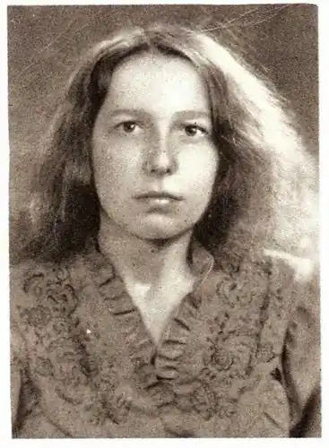
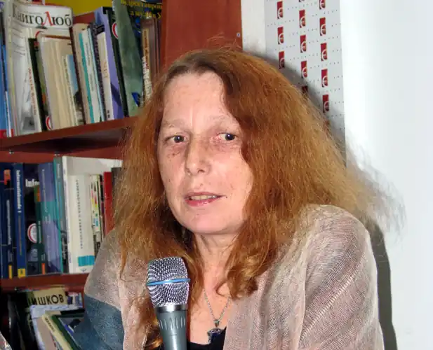

Народилася Москалець Галина Василівна (Галина Пагутяк) 26 липня 1958 р. в с. Залокоть Дрогобицького району на Львівщині, згодом родина переїхала у село Уріж. Закінчила українську філологію Київського державного університету ім. Т.Шевченка. Працювала у школі, у Дрогобицькому краєзнавчому музеї, приватній школі, Львівській картинній галереї. Прозаїк,член Національної Спілки письменників України. Живе у Львові.
Давно уже ніхто з жінок в українській літературі так не заворожував читача своєю міфо-поетичною прозою, як це робить Галина Пагутяк. Вона ввійшла в літературу рано, двадцятирічною дівчиною, ввійшла стрімко і сміливо. Дебютувала великими творами, і в кожному була іншою. Згодом подивувала своїх прихильників філігранною малою прозою. У своїх новелах в декількох рядках, в одному абзаці, вона творить надзвичайної сили й яскравості образи. Галині Пагутяк властиві фантастично-символічна манера письма, прорив до "вигаданого світу", потяг до містики та безнастанних пошуків спасіння людської душі у жорсткому світі. Письменниця постійно прагне зазирнути і за межу людської свідомості та осмислювати пограничний стан людського буття. Недомовленість у багатьох її творах дає великий простір читацької фантазії, спонукає до співтворчості, робить образи багатовимірними, врешті, несе в собі шарм таємничості й незбагненності.
Галина Пагутяк – автор книг прози: "Діти" (1982), "Господар" (1986), "Потрапити в сад" (1989), "Гірчичне зерно" (1990), "Записки Білого Пташка" (1999), "Захід сонця в Урожі" (1993), "Перевал" (1994), "Основа" (1995), "Кур"єр Кривбасу" (1996), "Дукля" (1994), "Смітник Господа нашого" (1996), "Біограф Леонтовича" (2001), "Книга снів і пробуджень" (1995), "Радісна пустеля" (1997), низки есе та циклу поезій. Проза Галини Пагутяк перекладена англійською мовою (Оповідання "Потрапити в сад"; німецькою уривки з повісті "Захід сонця в Урожі", новели "Тебе спалить сонце" та "Дивись назад"; російською повість "Діти"; словацькою повість "Соловейко" та хорватською новела "Дивись назад". На підставі подання Комітету з Національної премії України імені Тараса Шевченка Галині Пагутяк у 2010 році присуджено Національну премію імені Тараса Шевченка за книгу прози "Слуга з Добромиля".